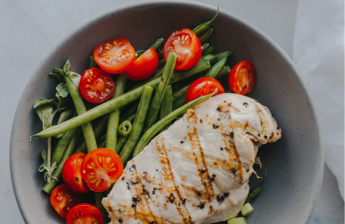
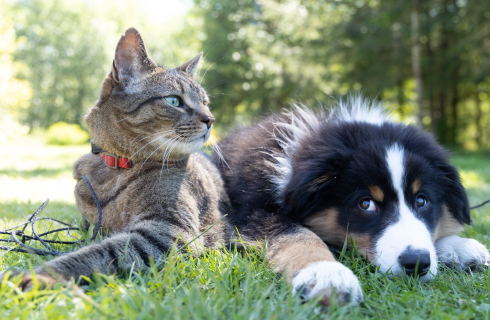
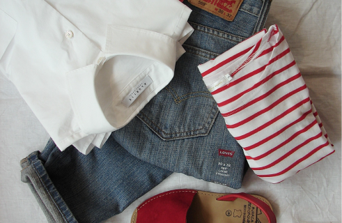
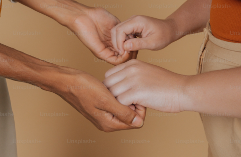
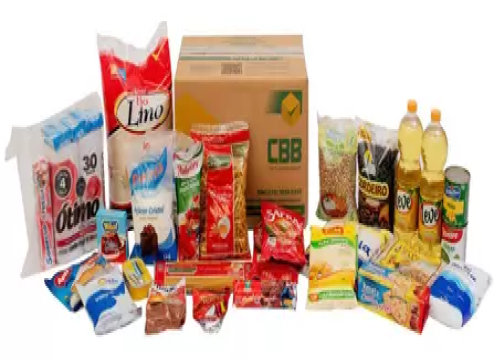
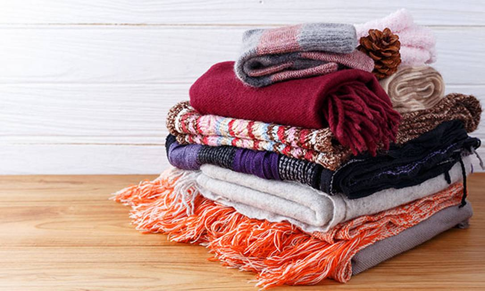
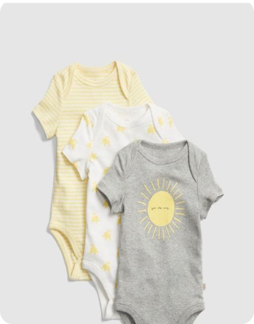
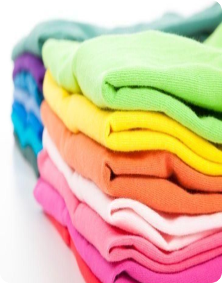
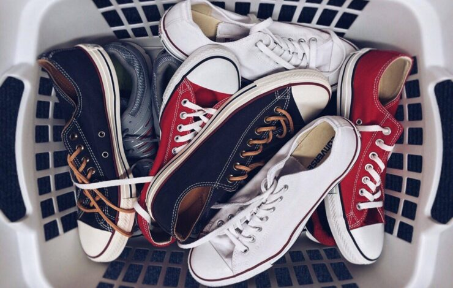

Campanhas
Categorias

Alimentos

Animais / Pets
Eventos

Vestuário
Saúde / Tratamento

Projetos Sociais
ONG's
Destaques

Cesta Basica
Ajude com a compra de Cestas Basicas
Oratorio UNISAL
Campinas - SP

Agasalhos
Ajude com a doação de Agasalhos e Roupas de Frio
Oratorio UNISAL
Campinas - SP

Roupas de Bebê
Ajude com a doação de Roupas de Bebê
Oratorio UNISAL
Campinas - SP

Roupas de Cama
Ajude com a doação de Roupas de Cama
Oratorio UNISAL
Campinas - SP

Sapatos
Ajude com a doação de Sapatos ou Tênis
Oratorio UNISAL
Campinas - SP